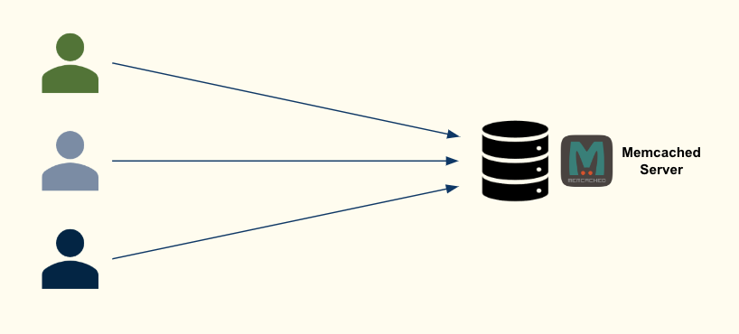
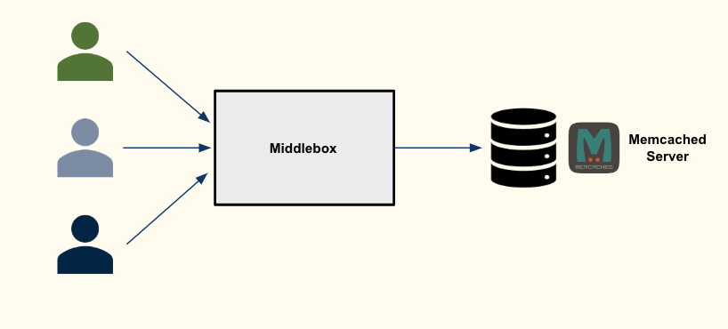

Merging packets using Kernel-Bypass Frameworks
The github repository is : https://github.com/ah19190/moving-obstacle-trajectory-prediction and the report can be found here.
For autonomous robots or vehicles, safety and performance are critical factors for motion planning – which can be loosely defined as how robots decide what motions to perform in order to safely travel from point A to B. The problem of two-dimensional motion planning with an arbitrary number of obstacles moving with bounded velocity is NP-hard (7). There are practical solutions that are effective when the robot and environmental factors are exactly known, but in real-world settings where those assumptions are no longer valid, safety is not guaranteed.
When environments are dynamic and not known in advance, the robot would need to reason about uncertainty. This project forms part of the predictive approach. In the predictive approach, there are two steps:
This project will focus on implementing a new approach to the first step, and evaluating its performance. The main idea of the project is to use an extension of the sparse identification of the nonlinear dynamics (SINDy) algorithm first developed in discovering governing equations from data by sparse identification of nonlinear dynamical systems developed here.
The code forecasts the trajectory of a dynamic moving obstacle without any pre-existing knowledge of the obstacle and its path. To my knowledge, prior to this project, there have been no existing solutions that utilise SINDy or an extension of SINDy to predict trajectories based on high fidelity simulation data (such as those generated by GAZEBO).
I use the PySINDy package that implements different extensions of SINDy available here.
The contributions of this code will be to:
This is the link to the report we submitted for this project.
Caching systems store responses to frequently-made requests from users within main memory. This reduces expensive resource usage (e.g. backend databases), which lowers latency. Many popular web applications, such as Facebook and Wikipedia, use Memcached, a key-value store-based caching system termed “the gold standard of web caching”.
Despite its popularity, Memcached suffers from well-documented performance limitation: Memcached spends 70% of the time in the Linux kernel processing packets.
This means that when multiple clients send requests to Memcached, the time spent processing packets will add up. This makes it ripe for optimization through packet aggregation. However, if request aggregation involves the kernel when processing packets, this overhead is not absorbed, only transferred. Kernel-bypassing frameworks, such as the Data Plane Development Kit (DPDK), overcome this by manipulating packets entirely within userspace.
Yet, modifying existing applications to use these frameworks may be costly, as the application must now implement and attain high performance on a dedicated network stack.
We therefore implement a software middlebox on top of DPDK, which absorbs the packet-processing overhead without requiring the modification of deployed applications. This reduces the kernel cost per request.
Merging packets using Kernel-Bypass Frameworks
Here are the various ways to get in touch.